Problem Definition
We were given a dataset of 500 shape images to analyze their background colors, segment each shape blobs by color, find contours and decide the blob shape. For this dataset, each shape blobs have a random unique color. Comparing to the real world of computer vision, this is simpler as colors are more complicated and and shape are more complex in the real world. However, we get to learn the basic techniques that are widely used in computer vision field now. We have observed that each shape blobs have a distinct color, so we assume that when we convert the shape image to grayscale, each shape blobs should remain distinct. The most difficult problem was how we should handle noises. Because of the JPEG format, even though for each shape blobs, the color seems to be different, but when reading it in OPENCV, the BRG values might be different.
In this problem, we use the original dataset but not the optimal dataset.Method and Implementation
Experiments
Because of the size of the dateset and the time we were given to complete the test, we run our program against 50 randomly selected images.
The detection rate was computed by: (the number of shape correctly detected)/(the number of annotations).
requirement 1: 83%
requirement 2: 83%
requirement 3: 73%
requirement 5: 63%
Results
The following images shows the original and result images in this problem:
Results | |||||
| Trial | Source Image | Requirement 1 Image | Requirement 2 Image | Requirement 3 Image | Requirement 5 Image |
| 1013 |  |
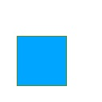 | 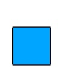 | 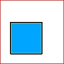 | 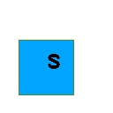 |
| 1001 |  |
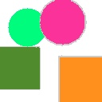 | 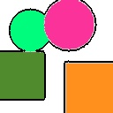 | 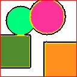 | 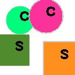 |
| 1051 |  |
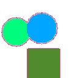 | 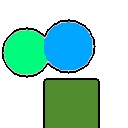 | 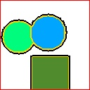 | 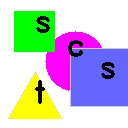 |
Discussion
Discuss your method and results:
- We used k-means in the beginning as we believe that it's most suitable to do color detection, especially that most of the colors in the shape images were distinct. We could easily segment each shape blobs. However, this requires us to find a k value that's as precise as possible. We set a filter so that we could ignore small noise, it seemed to work at least. But the noise level differs from image to image, it's hard to set a fixed value for all images.
- As K value for each image is different and difficult to define, the condition of label the blobs and mark the borders are not all perfect. When K value is larger than actual amount of blobs, the results of label blobs and mark border will contain some "noise" point. It is because of the JPEG format. The accuracy of those requirement are influenced by those reasons.
- We believe that our method was generally successful as we can successfully detect a large portion of the shape images. Again, the limitations are the noises come from the JPEG format.
- Because of the format of JPEG, there were too many noises that could mislead in the beginning. Like how we choose k for K-means. We tried using blur, erode & dilation, but none of them yield an ideal result. We should come up with a better way to predict k. Or potentially, we could iterate thru [0, 255] to get a set of binary images, and analyze at which threshold could there be a new shape appears or an existing shape disappears.
Conclusions
We had a hard time dealing with the noises, and we believe that this is also one of the major topic for computer vision. In order for our program to detect noises, we need to know an efficient way to detect it first. And we also learnt the strength and weakness of JPEG format and that of PNG format. Nothing's perfect and it's still not an ideal world, this is also the case for computer vision. We hope that in future, we could develope a better algorithm to eliminate those noises.
Credits and Bibliography
The url we used:
https://opencv.org
https://en.wikipedia.org/wiki/K-means_clustering
https://docs.opencv.org/3.4/d9/df8/tutorial_root.html